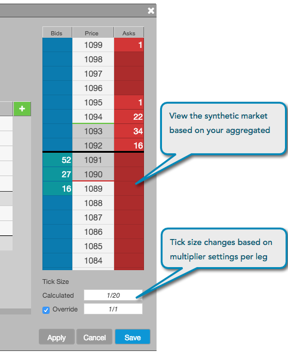

After configuring the legs of the aggregated instrument, the aggregated prices display in the Aggregator Preview pane in the configuration interface. The Aggregator Preview pane shows the number of current bids and offers at each price level in the aggregated market, which allows you to preview what is displayed in MD Trader before launching the aggregated instrument.
